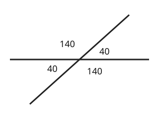

Part of Angle Facts. Answer in the chat (1: ..., g: c), add sure or guess after any answer, and say done when finished.
Last time: two lines cross and one angle is 40 degrees. What is the angle opposite it? You said b) 140. It is a) 40.

Your 140 is a real angle there, but it is the one beside the 40: they share a straight line, so they add to 180 (notes 2). The angle across from the 40 also sits on a line with that 140, so it is 180 - 140 = 40 again. Opposite angles are equal (notes 4).
Q1. Two lines cross and one angle is 65 degrees. What are the other three?
115, 65 and 115
Right: the two beside it make 180 with it, and the one across is equal to it (notes 4).
Q2. In your own words: why are opposite angles equal?
each of them makes 180 with the same angle between them, so they have to be the same size (guess)
Right: both are 180 minus the same angle (notes 2, 4).
Q3. Sam says opposite angles add up to 180. What is wrong?
that is true for angles next to each other on a line. Opposite ones are equal
Right: next to each other add to 180, opposite are equal (notes 4).
You can now find every angle where two lines cross.
A triangle has angles of 50 and 70 degrees. What is the third angle?
b (guess)